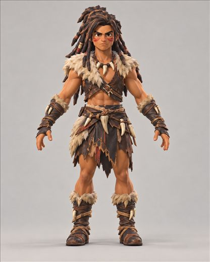
Raider
A fast attacker who forces you to cover gaps early.
Explore the enemy designs, see how combat changes across five eras and follow what we’re building next.
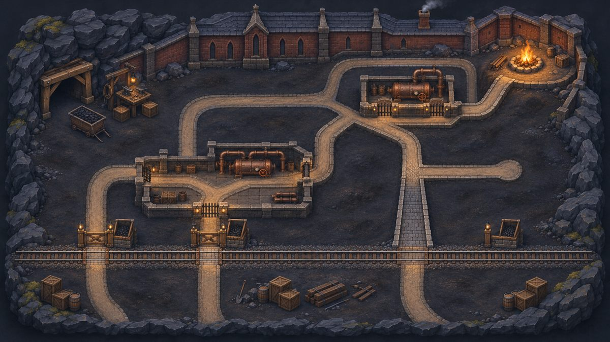
The gallery shows illustrative reference art from development. In-game designs may differ.
Wooden defences and stone traps hold paths around the first bonfires.

A fast attacker who forces you to cover gaps early.
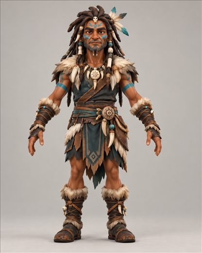
A drum-bearing enemy who supports the advancing horde.
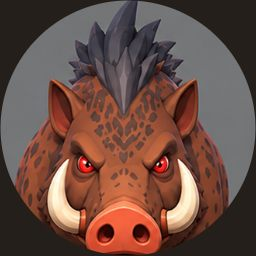
A charging beast. The Boar King (Javali-Rei) is the Tribal finale’s heavier threat.
Gates, high ground and falling rocks give the heroine new ways to redirect an assault.
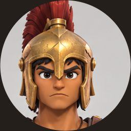
A spear-and-shield infantryman who can take more punishment than a raider.
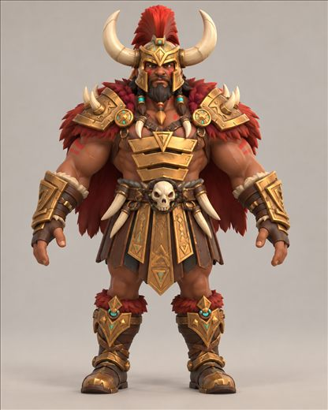
The armoured boss of the Bronze Age carries a heavy mace into the fight.
Mines, fortified approaches and siege pressure put your choice of defensive positions to the test.
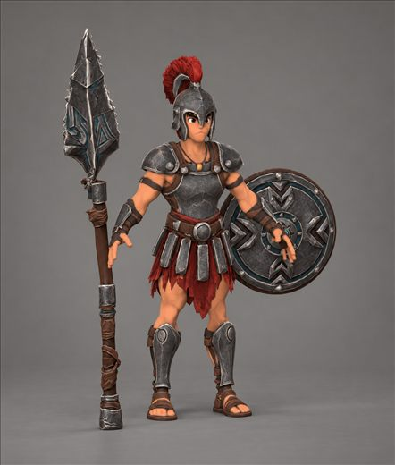
Heavy armour makes this fighter a tougher target as the wave closes in.
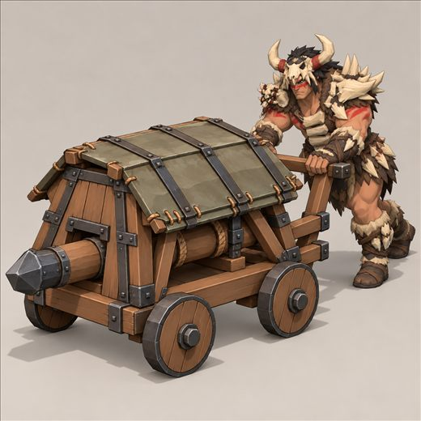
A siege engine that threatens gates and forces you to defend the approach.
Crossbow combat, ballistas, garrisons and traps change how you protect towns and courtyards.
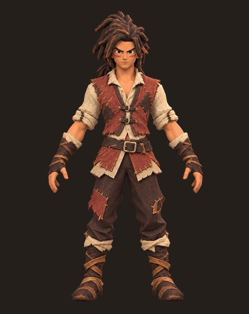
A quick frontline attacker who pressures exposed routes.
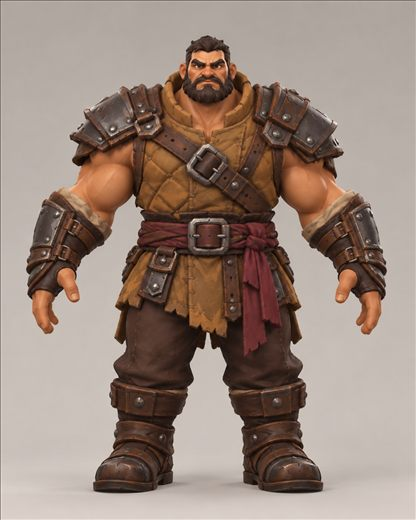
A heavy melee fighter who soaks up hits while the wave advances.
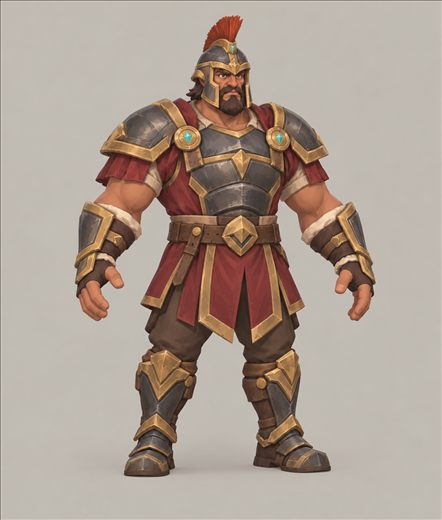
A tough siege unit that pushes the battering ram into the defence.
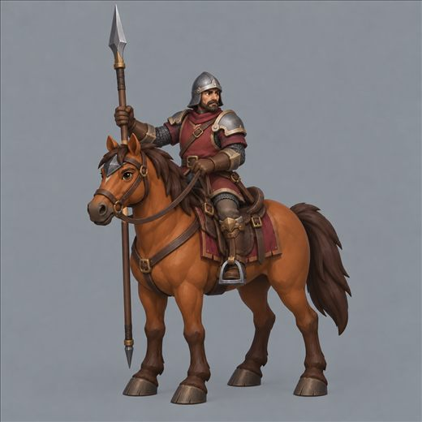
A mounted enemy whose charge can close a gap quickly.
Rail crossings, coal barriers and steam change how you hold the line across mine yards and foundries.
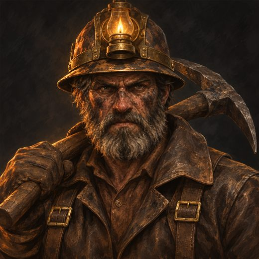
Advances in columns, keeping steady pressure on the defences.
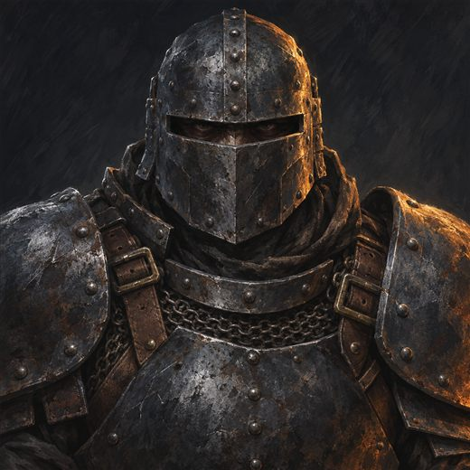
A shielded enemy built to stay standing under sustained fire.
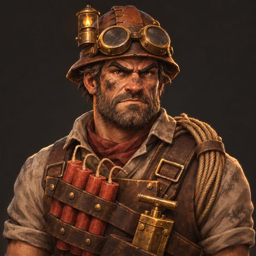
A fast saboteur who threatens gates and can break through coal barriers.
Tavruka is available on Android. The browser demo covers the first 15 levels in Normal difficulty, from Tribal through Iron.
Play the browser demoThe current Android test build includes 25 levels. Initial device checks have begun, with full playthroughs of levels 21–25 in Normal and Hard still to complete.
Finish Android playthroughs of levels 21–25, review balance and performance, then decide how these maps enter the public campaign.
The Mineiro, Dinamiteiro and Blindado use Hunyuan 3D character models and native animations, tested together in Unity.
Whenever a Hunyuan 3D model suits a new era, we’ll use it as a starting point and adapt its silhouette, equipment, palette and combat role to that era.
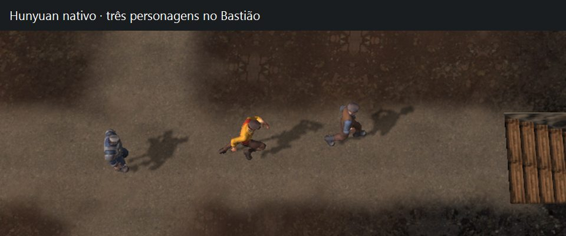
We adjusted the boar’s turns, the Boar King’s gait and the mounted knight’s charge. Next comes checking how those changes read on sloped terrain and on Android.
We revised waves across all five maps. The Mining Yard train runs automatically. Balance trials now reward active defence in Hard. Complete playthroughs on Android remain to be done.